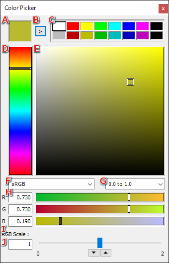
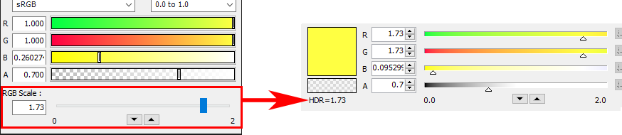

Color Picker
The color picker is used during color animation editing and when changing the color type shader parameters and other settings.
To open the color picker, click in one of the color display areas in Curve Editor or the Property window.
|

|
| A |
Displays the current color.
|
| B |
Adds the current color to the color palette.
Note: The alpha component is not added. |
| C |
The color palette.
Left-click in the palette to set the current color to the color in the palette. |
|
D
|
Changes the hue of the color. |
|
E
|
Changes the saturation and brightness value of the color. |
|
F
|
Select the display format for color elements from sRGB format, linear RGB format, and HSV format.
Only the display format changes. The values as set for the color are not affected.
|
|
G
|
Switches between integers (0-255) and real numbers (0.0-1.0) for the value display format.
This feature only applies when the RGB color component display format is selected. Only the display format changes. The values as set for the color are not affected.
|
|
H
|
Enter a numeric value for the color or set it with the slider. |
|
I
|
Enter a numeric value for the color scale or set it with the slider. |
|
J
|
Specify the color scale range. Use the buttons to specify a range from 0 to a maximum value.
The default range is set from 0 through 2.
|
|
Info
Colors with values exceeding 1.0 in the color palette cannot be saved. Values exceeding 1.0 are saved as 1.0.
Color scale values in the color palette cannot be saved.
HDR Color Settings
You can set HDR colors in the color picker by directly entering the color scale value or by using the slider.
If a color value (the product of the color value and the color scale in the color picker) larger than 1 is set, the maximum value of the set HDR color can be checked in the material properties window.

Info
The RGB value in the material properties window is displayed in the linear RGB format. The value is different from the sRGB format.
Related Links